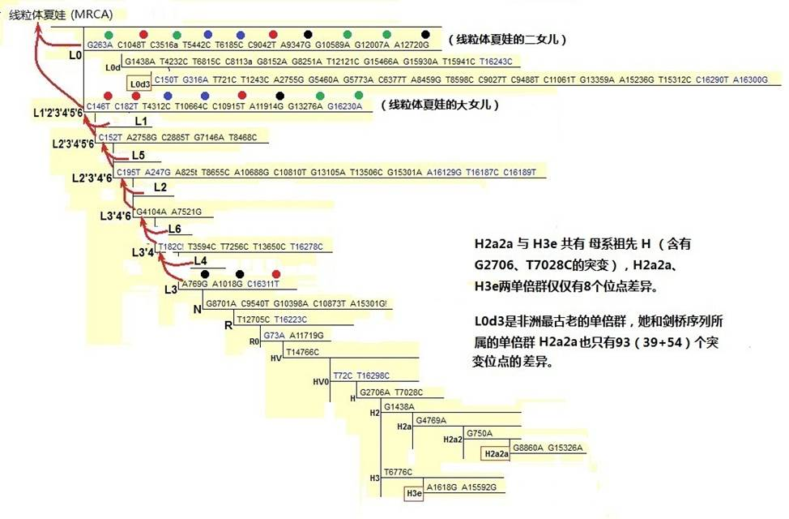

|
第2小节 寻找线粒体夏娃
一.“线粒体夏娃理论”的缘起
1987年，美国加州大学伯克莱分校的威尔逊教授（Allan Wilson）和夏威夷大学的卡恩教授（Rebecca
Cann）所领导的分子生物学小组，在“自然”杂志上发表文章，称他们从不同人种的147个胎盘中提取了线粒体DNA，并测试了它们的DNA序列。发现全人类的线粒体DNA，有一种高度类同的特征，其平均差异率竟然只有0.32％左右(相当于50个线粒体DNA字符的差异)，甚至比非洲大猩猩不同群族之间的差异还小。这个发现，使他们确定现代人类的线粒体DNA均来自非洲大约20万年前的一位女性，她是人类各种族的共同祖母。威尔逊等人说：“我们可以将20万年前这位幸运的女性称为夏娃，她的世系一直延续至今。”他们团队在美国”自然”杂志和”科学美国人”杂志上发表了两篇文章，核心结论如下：
“所有这些线粒体DNA的遗传是来自一个女人，她可能是生活在大约20万年前的非洲”、“遗传的研究表明，20万年前的一个非洲妇女是我们共同的祖先。”
“All these
mitochondrial DNAs stem from one woman who is postulated to have lived
about 200,000 years ago, probably in Africa.”
("Mitochondrial
DNA and Human Evolution," Nature, 01 January 1987)
“Genetic studies reveal that an African woman of 200,000 years ago was our common ancestor”
(“The Recent African Genesis of Humans”SCIENTIFIC
AMERICAN April 1992)
这就是“线粒体夏娃理论”的缘起
。
这种从DNA分子解码层面溯祖的方法，使科学家们眼前为之一亮，基于DNA寻祖的分子人类学，也由此正式奠立了第一块基石。
从那时起到现在，对这个理论的反对声音，已经越来越弱了，而后更多的研究验证，证明威尔逊教授发现的正确。
二.线粒体是什么样的

图2-7 人体的线粒体结构
1894年，德国生物学家阿特曼（Altmann）首次在动物细胞质中发现了一种颗粒状的结构，而后，根据它的形态特征将其命名为线粒体（或粒线体），它是细胞内一种极其重要的细胞器。每一个细胞中，有许多的线粒体，线粒体中存在着“线粒体DNA
” 或者叫mtDNA （Mitochondrial DNA）的物质。每一个线粒体内，可有一至几个线粒体DNA分子。每个线粒体DNA分子包含16569个碱基对，其中载有 37个基因，包含13个蛋白质编码基因、22种tRNA编码基因和2种rRNA编码基因。
线粒体DNA(mtDNA)为母系遗传，在胚胎形成中，不发生父、母的线粒体DNA遗传因子重组，而且线粒体DNA能将突变产生的标记保存下来，因此是研究人类遗传历史的重要材料。它和Y染色体同样是分子人类学的主要研究对象，也是母系关系鉴定和法医鉴定的重要参考材料。
三.线粒体DNA的遗传特性
为什么线粒体DNA可以承传母系遗传的标记呢？我们知道胎儿是由母亲的卵子和父亲的精子结合以后发育而成。父亲的精子在受精时，只把它的细胞核充满的精子头钻进卵子的细胞核里去，精子的尾巴留在外面的细胞质中，精子尾中含有的线粒体DNA极少，并且很快会分解消除，不会影响到卵细胞的线粒体DNA。受精卵除了细胞核里有从父亲来的
23个染色体外，可以说都是由母亲的卵子来提供的，所以子女的线粒体DNA只来自母方，父方的线粒体DNA不会遗传给子女。

精子、卵子受精图
如果从卵原细胞到形成胚胎的过程中，线粒体DNA没有发生突变，那么，胚胎细胞内的线粒体DNA与早先母亲的未受精卵完全一样，也就是说跟母亲体内细胞质的线粒体DNA没有不同，完全没有受到父亲遗传物质的影响。当一个受精胚胎细胞分裂成两个的时候，细胞质的内容也同样复制给两个新细胞。所以受精卵继续发育变成胎儿，胎儿的线粒体DNA与母亲的也是完全相同。因此，如果没有突变，任何人的线粒体DNA，与她（或他）的母亲、外祖母、外曾祖母、外高祖母等等，都是相同的。
然而，和Y染色体一样，在母系承传的同时，也会在若干代的繁衍中，在某个线粒体DNA的位点上发生突变。这一突变，又会向女儿以及女儿的女儿传递下去，实现了母系线粒体DNA的承传。由此看到，线粒体DNA（mtDNA）既可以作为母系世代承传的记录，同时又因为会有很少量的突变，还可以作为鉴别母系不同族群的依据。
我们知道，在分析Y染色体发生突变标记的位置时，并不考虑是发生在DNA基因区还是沙漠区。在分析线粒体突变标记时，也不考虑它是发生在基因区域还是非基因区域。在这一方面和分子医学的研究，有很大的区别。因此，多数分子人类学的研究人员，对基因的认识是很有限的。同样，多数从事医学的研究人员，往往不能理解分子人类学的研究方法，常对分子人类学持怀疑的态度。
四，线粒体的“剑桥序列”和“修正剑桥序列”
人类线粒体DNA是唯一分布于细胞核外的人类DNA遗传物质。在夏娃理论提出前的1981年，剑桥大学的医学专家们，就很有远见地认识到应该建立起一个线粒体DNA序列的样版。他们选择一个普通欧洲人的线粒体DNA样本进行检测，发现线粒体DNA是一个环状结构，并由16569个DNA代码形成。他们完成了整个线粒体DNA的测序工作，确定了环状结构的起点和终点，测定了每一个位点上的DNA字符。同时依照线粒体DNA的功能，将这一环状结构分成编码区和控制区。编码区含有15447个碱基（15447bp），内中包括了37个基因。控制区含有1122个碱基(1122bp)，所在点的位置为16024bp至16569bp和1bp至576bp，数码以顺时针方向递增，整个序列的起点1和终端16569都在控制区中。他们将此序列定名为“剑桥参照序列”，英文名称是：Cambridge Reference Sequence ，简称CRS。由此，给全世界从事线粒体研究设定了一个参照标准。
经过更多样本的分析，发现1981年版的“剑桥序列”存在少量的错误。其中碱基字符为“C”的第3017点，是第3016点字符“C”的重复，即第3017点是不存在的。实际的线粒体总数应该是16568个位点，另外还有10个点的碱基字符是错误的。1999年，公布了修正后的“修正剑桥参照序列”，其英文名称是Revised Cambridge Reference Sequence 简称rCRS。为了不对以往测试结果和以后结果的位置编号造成混乱，第3017点依然保持。用英文简称rCRS查询，很容易在网上找到此序列的全部碱基字符资料，你在第3017点上依然可以看到字符“C”，虽然它并不存在。（“修正剑桥序列”参看：http://www.phylotree.org/resources/rCRS_annotated.htm）
在剑桥大学的医学专家们完成首个线粒体DNA序列测定时，他们可能并没有想到这个序列的重要意义，人们并不知道夏娃理论，绝大多数的人都认为世界各地的人是各地猿人进化来的。当时没有人知道全世界人的线粒体DNA居然那么相同，但是，后来世界各地的医生在判定线粒体遗传病时，都以这个序列为标准，而不论他们的病人是何种肤色、种族。
线粒体DNA的结构如下图

图2-8 线粒体DNA分区
五．夏娃项链（线粒体夏娃的线粒体DNA序列）

图2-9 线粒体DNA标记序列犹如一环项链
1.线粒体DNA的记录功能
从分子医学角度来看线粒体DNA，线粒体DNA可以分为控制区和编码区，包含37个结构基因。从分子人类学来看，线粒体DNA全部的区域都是突变标记的记录区。其中，控制区（标记位置在16024bp到16569bp和1bp到576bp）是线粒体DNA的高突变率区，称高变区（Hyper
Variable Region）。编码区也是突变标记记录区，只是此区域内线粒体DNA的突变率远小于控制区的突变率，大约只是高变区突变率的二十分之一左右。
因为线粒体DNA突变标记发生在控制区的可能性，要比发生在编码区的机会要大，控制区就成了记录近几十、几百代母系血亲的“近、中代历史档案”区，也是法医们关注的线粒体DNA区域。更久远的千代以前历史档案，就要同时去查编码区的突变记录了。这和在Y染色体父系遗传标记的查询中，利用DNA编码“短串联重复序列”（STR），去鉴定几十代内的父系关系；而利用多态性（SNP），去查询千代以前的父系遗传关系，十分相像。
2. 夏娃项链
在通俗解释Y染色体标记的记录特性时，我们用了商品条码的概念做比喻。这里，我们可以拿项链来做比喻。线粒体DNA字符真像一串项链，它有16569个串珠连接而成，如果以红绿蓝黑四种颜色代换TACG四个字符编码（DNA测序仪也常常用这四种颜色来表示四个碱基字符），编码就成为一个美丽的项链了。我们每个人的血液中，不论男人和女人，都有这样的“项链”，它既承载着绝大部分“原始彩珠序列”色彩，也有着各个族群、以致各个家族自己特色的一些彩珠。这些特色彩珠是从“原始彩珠序列”的色彩突变出来的，它分布在“项链”的不同位置上。只要知道一个人在他16569个项链上各个点上的颜色，就能够辩识她或他的母系族群、以致家族。这一个个彩珠记录着突变码的历史，甚至可以勾画出他们母系祖先走出非洲的路线图。这样的遗传档案，任何人无法否认，任何人也无法伪造。令人感叹的是，只有女人的“项链”，才会向下一代遗传，因此，遗传不再是父系的专利，母系的遗传标记更能象征着女性的美丽。只要对比“项链”彩珠的排列，就会知道相互间有多少相近的母系关系，甚至知道你的母系来自何方，这是多么奇妙的记录方式啊。
六. 全球人类线粒体系统树和“夏娃标记”（“原始线粒体DNA序列”）
1．全世界人的线粒体DNA惊人的相似
自从1981年测定了线粒体剑桥序列之后，30多年来，人们一直在通过成千上万人的血液样本，去寻找这16569个碱基字符蕴藏的秘密。特别在1987年威尔斯等人提出“夏娃理论”之后，许多科学家都在这个“大胆假设”之下，开始了“小心地求证”。全世界可统计的已测试的线粒体DNA样本，至少在百万人以上，通过对这些资料的分析，已经相当准确地给出了“原始线粒体DNA序列”。目前被广泛采用“全球人类线粒体DNA系统树（母系树）”（Updated
comprehensive phylogenetic tree of global human mitochondrial DNA variation），就是在已经确定的“原始线粒体DNA序列”上建立起来的。这个“原始线粒体DNA序列”，即没有发生过突变的序列，就应该是线粒体夏娃、那位20万年前人类共同老祖母的线粒体DNA序列。
[线粒体DNA母系树：PhyloTree.org - mtDNA tree
Build 14 (5 Apr 2012)，mtDNA
tree Build 14 http://www.phylotree.org/previous_builds.htm ]
关于线粒体DNA，可以确定以下要点：
（1）不论任何种族，人们的线粒体数目都是一样的。虽然，某个个体人的线粒体DNA，会因某个碱基的重复或失去而产生一、两个数目的差别，但任何群体总体的碱基平均数目都是16568个。因为剑桥序列原来错误的影响，统一视为16569个（第3017点‘C’是不存在的）。
（2）不同种族之间，在16569个位点上，群体之间的碱基字符差异很小。例如白种人和黑种人之间，最多只有上百个碱基字符的差异。也就是说，大家至少在16400多个位点上的碱基字符是相同的。如果拿项链的串珠来比喻，世界上所有的人，他们身上的线粒体项链，在这16400多个点上，不但颜色是相同的，连位置的编号也是相同的。也就是说，相同位置的编号上，珠子的颜色都是一样的。如果制作两条16400个四种颜色串珠的项链，达到这种惊人准确的相互符合，即使人为地进行安插排列，要做到这样，也几乎是不可能的，更不要说通过人类自然地进化形成。
（3）不同种族的人在线粒体DNA上，都有相同数量和种类的基因：包含2种编码rRNA基因，22种编码tRNA基因，13种编码蛋白质基因，共37个基因。
其实，仅仅是这三点，就足以证明全世界人源自一位共同的母亲，任何随机的进化，都不可能建立起两个这样高度一致的序列。这就给了分子生物学科学家们巨大的信心，去寻找线粒体夏娃的“原始线粒体DNA序列”。
2. 线粒体谱系树（母系树）的建立
线粒体DNA系统树是靠采集全世界各个地区的各个原住民族的线粒体DNA样本，进行标记筛选和分析得到的。由于线粒体DNA母系祖先是借助现代人的线粒体DNA推断出来的，因此，无论推算多少代前的母系前辈，都必须有3条依据：a.至少有两个繁衍到现在的人群；b.这两个人群线粒体有突变的差异；c.有确定的“突变速率”作为参考。从母系树的DNA标记数目来看，平均每产生一个突变大致相应于经历了3千到4千年的遗传。
七. 线粒体谱系树（母系树）的命名
线粒体夏娃有两个最早的女儿，她们的名字是L0和L1’2’3’4’5’6。可能在最早命名时，令科学家兴奋的是他们感觉到他们发现了一条表达女性遗传的‘线’（Line），这线的起端就是线粒体夏娃，于是给了她一个代号‘L’。给最接近她的女儿们命名了‘L’+序号，这样，就有了L0、L1、L2等等。由于母系发现是逐渐完整的，因此，女儿们的序号和她们实际产生年代的次序是有区别的。例如L5比L3不但不年轻，还要老5万年。
前面我们讲过，母系祖先是由现存的现代人线粒体推算出来的，从图上我们可以看到L3和L4有一个共同的妈妈，她被命名为L3’4，这个名字很奇特，但却很科学。L3’4和L6又有一个妈妈L3’4’6。向上继续推算出的L1’2’3’4’5’6，这里8个突变位点表达的一个女性，她是L1、L2、L3、L4、L5、L6的母系祖先，也是线粒体夏娃的大女儿。
需要解释的是，虽然称她们为祖母、妈妈、女儿，那只是遗传的前后关系，事实上他们之间都有成千上万年的时间间隔，中间有许多简化了的女性，L们仅仅是她们的代表。然而，L0和L1’2’3’4’5’6，却是曾经实实在在存在过的人。而且所有L们都是曾经实实在在存在过的女人们，她们又都是来自同一位女性—“线粒体夏娃”，因此有许多遗传的线、网将她们连接在一起。她们的后裔一直延繁到现在，那就是你、我以及所有的人。那些没有后裔的女性们，虽然她们曾经存在过，但是已不可能出现在这个树中了。
当L们构成了母系树的主干后，她们之下，很自然的命名为‘M’、‘N’。再之下才命名为其它的字母代号。

图2-10 母系树（局部）
八. 后裔最多的女儿L3
如图，L3除了承传了自L1’2’3’4’5’6及其以下直到L3’4为止的32个突变标记，还形成了自身的三个突变点标记，三个标记串珠的颜色是黑、黑、绿（A769G,A1018G,C16311T）。这总共35个突变点，也可以说是35个项链上的彩珠，形成了她儿孙们的项链标志。L3代表的首个女性大约生活在9到8万多年前的非洲东北部，只有她的后裔，在8到7万多年前，伴同那位Y染色体M168男子的后裔走出了非洲（这是从DNA突变点数推断出的年代，实际的年代可能还要早一万多年）。可以想象，在8万多年前，在非洲尼罗河畔，有许多佩戴着L3项链标记的女子们，和佩戴着Y染色体M168标记、也佩戴着L3项链标记的男子们共同生活着。由于某种原因召唤着，他们中间的一群人离开了非洲向阿拉伯半岛以及更远的方向走去。因此，非洲之外所有原住民身上佩戴的线粒体项链，都有这25个特定彩珠。而在非洲之内的很少数原住民身上，存有这样的标记，他们应该是没有出走，留守的L3的后裔，或者是走出又返回故乡的人群。
当这一群人离开非洲后，在母系方面，又由于线粒体突变，在8到7万多年前，先后产生了N和M两个单倍群的代表女性，非洲之外几乎所有的人们，都是她们的后裔。
佩带M项链和N项链的女性又各有她们的女儿们，这些女儿们伴同有着M168标记的男人们，走向了亚洲、欧洲，并进一步迈入了澳洲和美洲。
线粒体谱系树（母系树）另一种形式的表达图

图2-11 母系树图谱

图2-12：世界线粒体DNA单倍群分布图：
上一页
1 2 3 4 下一页 回主页
|